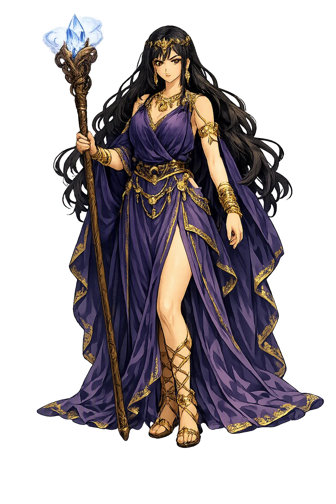
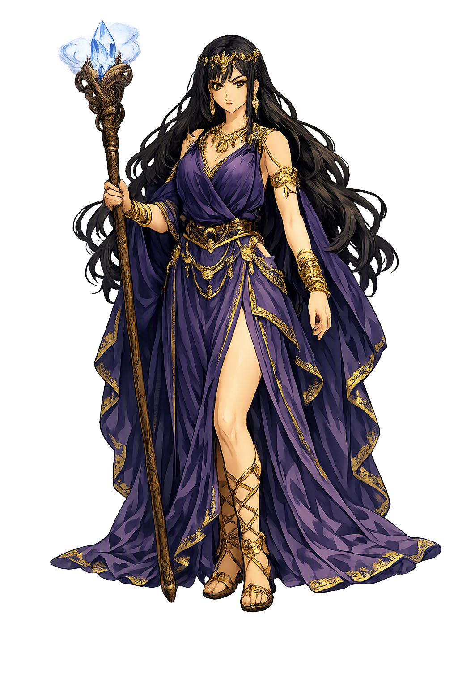

The Authentic Orthography
Sorceress, Aeaea, Transformations · Falcon, bird of prey

Unicode restoration and ASCII comparison
Κίρκη
The name in its original Greek form. Kírkē (Κίρκη) is attested in the source tradition — “Falcon, bird of prey”. Its long vowels and acute accents carry the full phonetic and orthographic weight of the source tradition.
circe
Reduced to plain circe, the name loses everything that made it specific: long vowels and acute accents. What remains is an ASCII string that machines can parse but that no longer speaks with its original voice.
Kírkē
The Unicode restoration recovers what ASCII flattened. Kírkē restores long vowels and acute accents, returning the name to its original written dignity. The domain encodes to Punycode, but the browser displays the truth.
Kírkē.com → xn--krk-rma6q.com
The non-ASCII characters in Kírkē are encoded while the ASCII remains visible. To the DNS, it is Punycode. To humanity, it is Kírkē.
How Kírkē is preserved in writing
A bespoke provenance study for Kírkē is being prepared by the PUNICODEX scholarly team.
Contribute scholarly provenance →Owned, ideal, and ASCII forms of Kírkē
Kírkē
Restores Κίρκη. The live temple domain — kírkē.com.
circe
Flattens Κίρκη. The plain ASCII fallback — what DNS and legacy systems see.
How Kírkē was spoken
Sorcery, Transformation, and Isolation
Kírkē is the daughter of Hēlios and the Oceanid Perse, sister of Aiētēs and Pasiphaē, aunt of Médeia — the Sun's own child keeping house alone on Aiaia, an island at the edge of the charted world. Homer calls her a dread goddess endowed with speech (δεινὴ θεὸς αὐδήεσσα) and polýpharmakos, mistress of many drugs. She is the first great enchantress of Western literature, and her wand does not kill men: it unmakes them, penning the human mind inside the bodies of beasts.
Her art runs through drugs: barley, cheese, and pale honey stirred into Pramneian wine, the pharmaka hidden in the food (Odyssey 10.234–235).
She is the Greeks' first great thought-experiment on form: the body unmade, the mind left watching from inside the beast.
Her island at the world's edge: Homer moors it where the dawn rises; Rome moved it west to the cape that still bears her name.
Stories of Kírkē
Kírkē's myths turn on the unstable border between human and animal — and on Homer's strangest reversal: the goddess who defeats every man she meets becomes, the hour she is beaten, the hero's most useful ally.
In Odyssey 10 (208–243), Eurylochus leads twenty-two scouts to Kírkē's hall, past mountain wolves and lions that fawn like dogs — creatures she herself had charmed with evil drugs. She mixes the men a potion of barley, cheese, and pale honey in Pramneian wine, hides pharmaka in the food, strikes them with her wand, and pens them in the sties. They take the heads, the voice, the bristles, and the shape of swine — 'but their mind remained as firm as before' (10.240). Homer does not say she made them beasts; he says the men went on thinking inside the beast, the most quietly horrifying line in the poem. Odysseus comes for them armed with the moly Hermes gives him (10.275–306) — the black-rooted, milk-flowered herb that is hard for mortals to dig, but the gods can do all things.
Her drugs fail against the moly, and Kírkē — recognizing an old prophecy fulfilled — changes sides: she swears the great oath to plot no further harm and takes him to her bed (Odyssey 10.343–346). She restores the crew younger, taller, and fairer than before (10.388–396), and they sit a whole year feasting on abundant flesh and sweet wine (10.467–477). When Odysseus asks to leave, she does not hinder him; she gives him the voyage no living man has sailed — down to the house of Hades and dread Persephone, to consult the soul of the blind seer Teiresias (10.487–540). She names the rock where Pyriphlegethon and Cocytus fall into Acheron and prescribes the blood of a black ram and a ewe to summon the dead. The enchantress becomes the guide: the katabasis of the Odyssey is her itinerary.
Hesiod already knows children of the union: Kírkē, 'in love with steadfast Odysseus,' bears Agrius, Latinus, and Telegonus, 'who ruled over all the much-famed Tyrrhenians' (Theogony 1011–1016 — lines some editors bracket as post-Hesiodic, but our oldest witness to her Italian afterlife). The lost Telegony of Eugammon of Cyrene, preserved in Proclus's summary, completes the tragedy: grown Telegonus sails to find his father and, raiding a coast he does not know, kills Odysseus in ignorance with a spear tipped with a sting-ray's barb — the gentle death 'from the sea' that Teiresias foretold (Odyssey 11.134). He carries the body and Penelope home to Aiaia; Telegonus marries Penelope, Telemachus marries Kírkē herself, and the goddess makes them all immortal and sends them to the Isles of the Blest.
Ovid gives her the witch's cruelest afterlife. The sea-god Glaucus comes to Kírkē for a charm to win the nymph Scylla; Kírkē offers herself instead, is refused, and answers like the daughter of the Sun she is — she grinds her herbs, crosses to the pool, and poisons the water where Scylla bathes (Metamorphoses 14.1–74). Scylla rises to the waist in a ring of barking dogs and becomes the monster of the strait that will one day face Charybdis — the very Scylla whom Kírkē herself teaches Odysseus to pass (Odyssey 12.116–126). In the same book she turns the Latian king Picus into a woodpecker for loving Canens (14.320–434). Rome's Circe does not retire; she curdles the seas and forests of Italy.
The Greeks never decided whether Kírkē was danger or salvation, and Homer refuses to help. He calls her a dread goddess, then lets her feed the hero for a year, arm him against the Sirens and Scylla, and draw him the only map of the underworld Greek epic possesses. She is the poem's most accomplished divinity after Athēnâ — and the only one whose power is chemical. Pharmaka, not thunderbolts: the Greeks suspected that transformation, like poisons and potions, was women's work, and Kírkē is that suspicion deified and stranded on an island where no husband can check her.
Enter Extended Lore